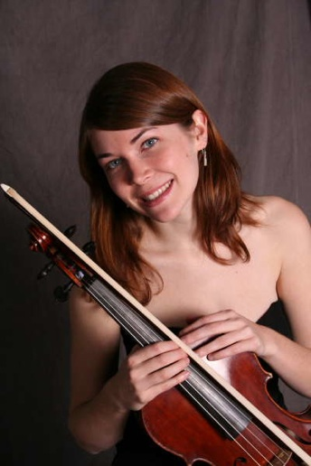

Violist Dana Rokosny is rotating principal violist of the self-conducted Ars Nova Chamber Orchestra in Washington, DC and principal violist of the Two Rivers Chamber Orchestra in Shepherdstown, WV. This summer she is violist for the second annual Pikes Falls Chamber Music Festival in Jamaica, VT. Dana has been Adjunct Viola and Violin Faculty at Frederick Community College since 2008 and recently joined the Holton-Arms School in Bethesda, MD as Adjunct Violin/Viola Faculty as well. In addition, Dana is a freelance violist in the DC Metro area which includes performances with the Maryland and Fairfax Symphony Orchestras. As an avid chamber musician, she has enjoyed performing as violist in the Beau Soir Ensemble of D.C. and the D.C. Piano Quintet. In the fall of 2014, Dana looks forward to performing a concerto with the Two Rivers Chamber Orchestra.
Dana received a B.M. from Ithaca College studying with Debra Moree and a M.M. from Rice University's, Shepherd School of Music studying with Karen Ritscher. Also there, she studied orchestral excerpts privately with Joan DerHovsepian of the Houston Symphony. In 2005 and 2006, Dana continued studies with Lynne Ramsey at the Cleveland Institute of Music as part of their Professional Studies program. Five years later, she returned to school pursuing doctoral studies with Doris Lederer, violist of the Audubon String Quartet. During her studies, Dana toured Russia, Armenia, Ireland and Spain with various orchestras. Ms. Rokosny has participated in numerous summer music festivals including: Luzern Festival Academy directed by Pierre Boulez; American Conducting Academy Orchestra at the Aspen Music Festival as a fellow and assistant principal viola; National Repertory Orchestra; National Orchestral Institute; Bowdoin Summer Music Festival; American Russian Young Artist's Orchestra; Meadowmount School of Music and the Indiana Summer String Academy. Summers included studies with violists Jeffrey Irvine, Ralph Fielding, Daniel Foster and Alan Bodman.
Dana has performed in masterclasses for Jamie Laredo, Daniel Avshalomov, Daniel Foster, Ralph Fielding and Roger Meyers and received chamber music coaching from James Dunham, Peter Salaff, Doris Lederer, Susan Waterbury and Read Gainsford. As part of the Lenaro Quartet, Ms. Rokosny was a semi-finalist in the Junior Fischoff Chamber Music Competition in 1999. In 2002, she won the Ithaca College Concerto Competition, and in 2005, premiered a Viola Concerto written for her by Dr. Christopher Lee while at Rice University. In 2006, she was offered a faculty position at the Maryland Talent Education Center where she taught private and group Suzuki lessons. Dana performs on a 1999 David McDermott viola, of Dickerson, MD, and a Richard Grunke bow.